1072B50 sleeves connecting air capacity box to inlet manifold is - r+r
- Path
- Procedures > 10 ENGINE > 1072 INLET AND EXHAUST MANIFOLDS > 1072B inlet manifolds > 1072B50 sleeves connecting air capacity box to inlet manifold is - r+r
- Kind
- repair procedure (removal / refitting; the operation number is the code)
- Applies to
- engines: 1.6 TS , 2.5 V6, 3.2 V6, 1.9 JTD 8v , 2.4 JTD 10v; all production periods
- Interactive page
- https://sloeber94.github.io/elrnDB-a156/en/#/3237557
Applies to: engines: 2.5 V6; all production periods
 Removing
Removing
 Refitting
RefittingDisconnect the battery negative (-) terminal.
 | Name | Connector |
|---|---|---|
- | Battery |
1. Loosen the bands fixing the inlet ducts to the air chamber.
2. Disconnect the oil vapour recirculation pipe from the air chamber.
3. Disconnect the vacuum intake pipe from the air chamber.
4. Disconnect the fuel/oil vapour recirculation pipe from the air chamber.
5. Undo the bolts (5a) and move the oil vapour separator (5b) aside.
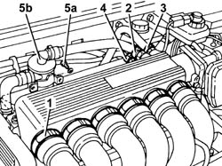
Applies to: engines: 2.5 V6; all production periods
Disconnect the corrugated hose from the throttle body and move aside.
1. Disconnect the electrical connection of the throttle body actuator.
| Name | Connector |
|---|---|---|
1 | Throttle body actuator |
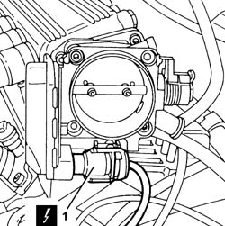
Applies to: engines: 2.5 V6; all production periods
1. Undo the bolts (1a) and remove the air chamber (1b).
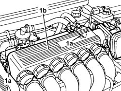
Applies to: engines: 2.5 V6; all production periods
Refitting
RemovingFit the air chamber, connect it to the intake ducts and fix it using the bolts.
Connect the electrical connection to the throttle body actuator.
Replace the corrugated sleeve and connect to the throttle body.
Place the oil vapour separator back in its housing and fix it using the bolts.
Connect the fuel vapour recirculation pipe to the air chamber.
Connect the brake servo vacuum intake pipe to the air chamber.
Connect the oil vapour recirculation pipe to the air chamber.
Tighten the bands fixing the inlet ducts to the air chamber.
Connect the negative (-) battery terminal.
Applies to: engines: 2.5 V6, 3.2 V6; all production periods; only with equipment: Euro 3
Removing
RefittingEnsure that the ignition key is in the OFF position, then disconnect the negative battery terminal.
| Name | Connector |
|---|---|---|
- | Battery |
1. Disconnect the fuel vapour recirculation pipe from the air chamber and move it aside.
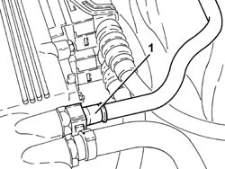
Applies to: engines: 2.5 V6, 3.2 V6; all production periods; only with equipment: Euro 3
Proceed with removal 1056B82 injection/ignition system e.c.u. (one) - r + r .
1. Open the electrical connections box cover.
2. Disconnect the engine coupling.
3. Disconnect the electrical connections (3a) and (3b) for the rear Lambda sensors and the catalytic converter.
| Name | Connector |
|---|---|---|
3a | Lambda sensor on catalyzer |
| Name | Connector |
|---|---|---|
3b | Lambda sensor on catalyzer -2 |
4. Disconnect the electrical connection for the detonation sensor, timing side.
| Name | Connector |
|---|---|---|
4 | Detonation sensor - 1 |
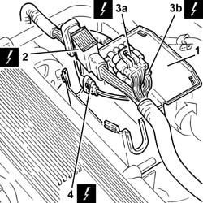
Applies to: engines: 2.5 V6, 3.2 V6; all production periods; only with equipment: Euro 3
1. Undo the bolts (1a) and remove the connections box (1b).
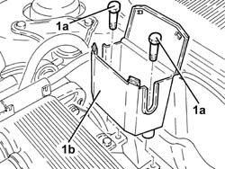
Applies to: engines: 2.5 V6, 3.2 V6; all production periods; only with equipment: Euro 3
1. Release the fuel supply pipe (1a) and the electrical wiring for the detonation sensor (1b) from the fastening (1c) on the air chamber.
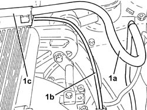
Applies to: engines: 2.5 V6, 3.2 V6; all production periods; only with equipment: Euro 3
1. Loosen the band (1a) and disconnect the oil vapour recirculation pipe (1b) from the corrugated hose.
2. Loosen the bands (2a) and remove the corrugated hose (2b), complete with resonator (2c).
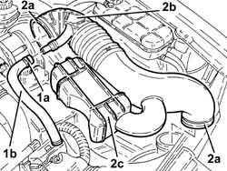
Applies to: engines: 2.5 V6, 3.2 V6; all production periods; only with equipment: Euro 3
1. Disconnect the electrical connection from the throttle body integrated with the D.V.L.
| Name | Connector |
|---|---|---|
1 | Throttle body actuator |
2. Loosen the band and disconnect the vacuum intake pipe from the air chamber.
3. Loosen the band and disconnect the oil vapour recovery pipe from the air chamber.
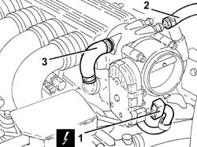
Applies to: engines: 2.5 V6, 3.2 V6; all production periods; only with equipment: Euro 3
1. Undo the bolt (1a) and disconnect the earth lead (1b) from the air chamber.
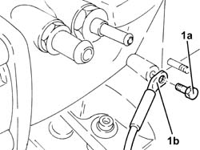
Applies to: engines: 2.5 V6, 3.2 V6; all production periods; only with equipment: Euro 3
1. Loosen the bolts fixing the intakes to the manifolds.
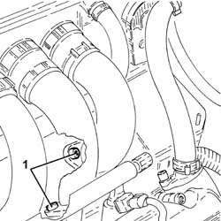
Applies to: engines: 2.5 V6, 3.2 V6; all production periods; only with equipment: Euro 3
1. Undo the bolts (1a) and remove the reinforcement (1b) between the air chamber and bracket on the engine for the reaction link.
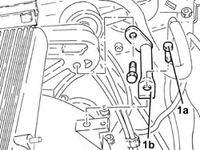
Applies to: engines: 2.5 V6, 3.2 V6; all production periods; only with equipment: Euro 3
1. Loosen the bands securing the air intakes to the air chamber.
2. Undo the bolts (2a) and remove the air chamber (2b).
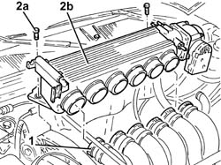
Applies to: engines: 2.5 V6, 3.2 V6; all production periods; only with equipment: Euro 3
Refitting
RemovingPlace the air chamber back in its housing and secure it using the bolts.
Tighten the bands securing the air intakes to the air chamber.
Refit in its seating the reinforcement between the air chamber and bracket on the engine for the reaction link and secure it with its bolts.
Tighten the bolts securing the air intakes to the manifolds.
Connect the earth lead to the air chamber and secure it using the bolts.
Connect the oil vapour recovery pipe to the air chamber and secure it using the band.
Connect the vauum intake pipe to the air chamber and secure it using the band.
Connect the electrical connection to the throttle body integrated with the D.V.L.
Place the corrugated hose, complete with resonator, back in its housing and tighten the bands.
Connect the oil vapour recirculation pipe to the corrugated hose and tighten the band.
Secure the fuel supply pipe and the electrical wiring for the detonation sensor to the fastening on the air chamber.
Place the electrical connections box back in its housing and secure it using the bolts.
Connect the electrical connection for the detonation sensor, timing side.
Connect the electrical connections for the rear Lambda sensors to the catalytic converter.
Connect the engine junction.
Close the electrical connections box cover.
Proceed with refitting 1056B82 injection/ignition system e.c.u. (one) - r + r .
Connect the fuel vapour recovery pipe to the air chamber.
Connect the negative (-) battery terminal.
Applies to: engines: 1.6 TS ; all production periods
Place the car on a ramp.
5530B22 battery earth lead - r+r
7055B54 under-engine guard - r r
Disconnect the electrical connection from the intake air temperature sensor.
| Name | Connector |
|---|---|---|
- | Air temperature sensor |
1. Release the collar securing the oil vapour return pipe to the throttle body and disconnect.
2. Undo the bolt securing the oil vapour duct connection and withdraw from the cylinder head
Remove the air supply sleeve from the flow meter to the air casing (refer to op. 1048A34 sleeve(s) from flow meter to air supply capacity case - r + r )
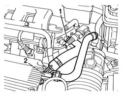
Applies to: engines: 1.6 TS ; all production periods
Disconnect the constant idle actuator electrical connection
| Name | Connector |
|---|---|---|
- | Idle actuator |
Disconnect the vacuum intake pipe for the fuel pressure regulator.
1. Release the collars and disconnect both coolant intake and outlet pipes (1a-1b) from the throttle body
2. Disconnect the accelerator cable from the throttle body
3. Unscrew both bolts securing the rigid coolant pipe and remove from the air casing
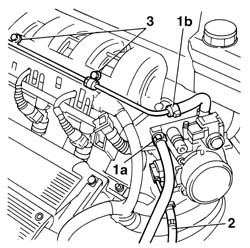
Applies to: engines: 1.6 TS ; all production periods
Disconnect the electrical connection to the throttle position switch (potentiometer)
| Name | Connector |
|---|---|---|
- | Throttle position sensor |
1. Unscrew the bolt securing the facia wiring support bracket, then remove
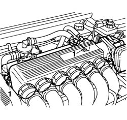
Applies to: engines: 1.6 TS ; all production periods
1. Disconnect the timing sensor electrical connection.
| Name | Connector |
|---|---|---|
1 | Timing sensor |
2. Disconnect the electrical connection for the detonation sensor.
| Name | Connector |
|---|---|---|
2 | Detonation sensor - 1 |
3. Disconnect the electrical connection for the rpm and timing sensor.
| Name | Connector |
|---|---|---|
3 | Rpm sensor |
4. Withdraw the fuel vapour recirculation pipe from the air casing.
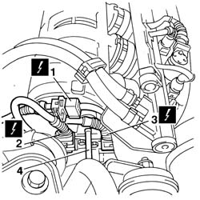
Applies to: engines: 1.6 TS ; all production periods
Raise the car.
1076B50 exhaust pipe attachment to engine - r + r
Release the engine wiring from the plastic fastenings on the rear of the casing and on the casing bracket.
1. Undo the four bolts securing the casing bracket.
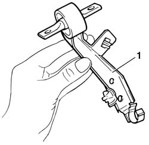
Applies to: engines: 1.6 TS ; all production periods
Unscrew both bolts securing the air intake casing to the cylinder head
Loosen the four collars from the sleeves connecting the casing to the intake manifolds and move the casing toward the cam cover.
1. Loosen the collar on the brake servo vacuum hose located beneath the air intake casing and withdraw
2. Release the rpm and timing sensor and knock sensor connectors from the fastenings in the air intake casing.
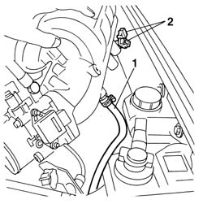
Applies to: engines: 1.6 TS ; all production periods
1. Remove the air intake casing assembly from the engine bay
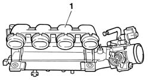
Applies to: engines: 1.6 TS ; all production periods
Fit the air intake casing assembly inside the engine bay.
Fit the brake servo pipe into the fitting beneath the casing and tighten the collar
Connect the knock sensor and rpm and timing sensor connection to the fastenings on the casing
Secure the casing to the intake manifold rubber sleeves
Connect the sleeves by pushing home and then tighten the four retaining collars.
Tighten both bolts securing the casing to the cylinder head
 | Fastening | Component | Ø | Value (daNm) |
|---|---|---|---|---|
- | Nut | INLET AIR DUCT | M8 | 1.7 - 2.1 |
Position the air intake casing bracket and tighten the four bolts
Secure the wiring by means of the plastic fastenings on the back of the casing and on the bracket
1076B50 exhaust pipe attachment to engine - r + r
Lower the vehicle.
Fit the fuel vapour recirculation pipe into its seat on the casing
Connect the electrical connection for the rpm and timing sensor.
| Name | Connector |
|---|---|---|
- | Rpm sensor |
Connect the electrical connection for the detonation sensor.
| Name | Connector |
|---|---|---|
- | Detonation sensor - 1 |
Connect the timing sensor electrical connection.
| Name | Connector |
|---|---|---|
- | Timing sensor |
Refit the facia wiring bracket
Connect the electrical connection of the throttle valve position switch (potentiometer0
| Name | Connector |
|---|---|---|
- | Throttle position sensor |
Position the rigid coolant pipe and tighten both bolts
Reconnect the accelerator cable
Reconnect both coolant inlet and outlet pipes to the throttle body and do up the collars
Connect the vacuum intake pipe for the fuel pressure regulator.
Connect the constant idle actuator electrical connection.
| Name | Connector |
|---|---|---|
- | Idle actuator |
Refit the air supply sleeve from the flow meter to the air casing (refer to op. 1048A34 sleeve(s) from flow meter to air supply capacity case - r + r )
Position the oil vapour duct connection and tighten the retaining bolt
Reconnect the oil vapour recovery pipe to the throttle body and do up the collar
Connect the electrical connection to the intake air temperature sensor.
| Name | Connector |
|---|---|---|
- | Air temperature sensor |
Applies to: engines: 1.6 TS ; all production periods
Applies to: engines: 1.9 JTD 8v , 2.4 JTD 10v; all production periods
Removing
Refitting4450B10 Front WHEEL (one) - R.R.
7055B64 Engine compartment DUST shield in front wheel arch (one), left or right - R.R.
1092G10 single engine belt r r
1092A12 crankshaft pulley - r+r for versions with air conditioner
1032D12 timing system protective cover(s) - r + r
1008C10 power unit upper reaction link r r .
1016A10 sound-proofing cover - r + r .
1008C14 engine link bracket - r r
1060E30 pressure pump pulley - r r
1. Undo the nuts (1a) and move the fuel filter (1b) away from the air capacity body.
2. Undo the nuts (2a) and move the oil vapour separator (2b) away from the air capacity body.
3. Undo the bolts (3a) and remove hose (3b) carrying coolant to the coolant supply reservoir.
4. Disconnect the electrical connections from the heater plugs.
| Name | Connector |
|---|---|---|
4 | Heater plug |
5. Disconnect the electrical connections from the injectors, then move the wiring to the side.
| Name | Connector |
|---|---|---|
5 | Injector |
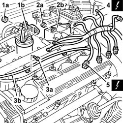
Applies to: engines: 1.9 JTD 8v , 2.4 JTD 10v; all production periods
1. Undo the manifold side connectors for the pipes from the fuel manifold to the injectors using a suitable spanner.
2. Undo the injector side connectors of the pipes leading from the fuel manifold to the injectors using a suitable spanner.
3. Remove the pipes from the fuel manifold to the injectors.
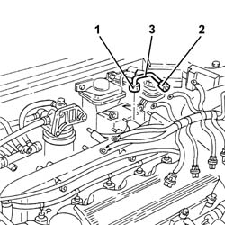
Applies to: engines: 1.9 JTD 8v , 2.4 JTD 10v; all production periods
1. Disconnect the electrical connection from the fuel pressure sensor.
| Name | Connector |
|---|---|---|
1 | Fuel pressure sensor |
2. Undo the nuts (2a) and remove the single fuel manifold pipe (2b).
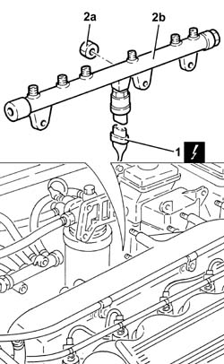
Applies to: engines: 1.9 JTD 8v , 2.4 JTD 10v; all production periods
1. Disconnect the air inlet hose from the air chamber.
2. Undo the nuts (2a) and disconnect the exhaust gas recirculation (EGR) pipe (2b) from the air chamber.
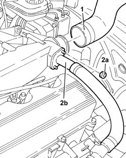
Applies to: engines: 1.9 JTD 8v , 2.4 JTD 10v; all production periods
1. Remove the stud shown in the figure, which secures the pressure pump to its mount.
2. Undo the bolts securing the air chamber to the pressure pump.
3. Undo the nuts (3a) and remove the air chamber (3b) with the gasket.
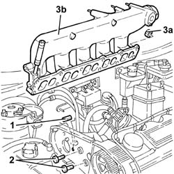
Applies to: engines: 1.9 JTD 8v , 2.4 JTD 10v; all production periods
Refitting
Removing1. Fit the air chamber (1a) complete with a new gasket, and fix it tightening the nuts (1b) to the recommended torque.
| Fastening | Component | Ø | Value (daNm) |
|---|---|---|---|---|
1b | Nut | INLET MANIFOLD | M8 | 2.1 - 2.6 |
2. Use a torque wrench to tighten the bolts securing the air chamber to the pressure pump mount
| Fastening | Component | Ø | Value (daNm) |
|---|---|---|---|---|
2 | Bolt | INLET MANIFOLD | M8 | 2.1 - 2.6 |
3. Fit the stud shown in the figure, which secures the pressure pump to its mount.
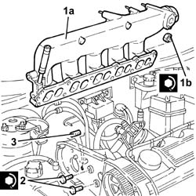
Applies to: engines: 1.9 JTD 8v , 2.4 JTD 10v; all production periods
Connect the exhaust gas recirculation (EGR) pipe to the air chamber and fix it using the nuts.
Connect the air inlet hose to the air chamber.
Fit the single fuel manifold pipe and fix it using the nuts.
Connect the electrical connection to the fuel pressure sensor.
1. Fit all the pipes from the fuel manifold to the injectors and secure them using the connectors without tightening them.
2. Undo the connectors for the pipes from the fuel manifold to the injectors, injector side, using a suitable spanner.
| Fastening | Component | Ø | Value (daNm) |
|---|---|---|---|---|
2 | Connector | FUEL MANIFOLD LINE TO INJECTORS | M12 | (Injector side) 2.2 |
3. Tighten the connectors for the pipes between the fuel manifold and the injectors, manifold side to the recommended torque using a suitable spanner.
| Fastening | Component | Ø | Value (daNm) |
|---|---|---|---|---|
3 | Connector | FUEL MANIFOLD LINE TO INJECTORS | M14 | (Fuel manifold side) 2.2 |
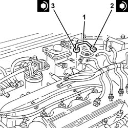
Applies to: engines: 1.9 JTD 8v , 2.4 JTD 10v; all production periods
Connect the electrical connections to the injectors.
Connect the electrical connections to the heater plugs.
Fit the coolant hose to the coolant reservoir in its seat and bolt in place.
Place the oil vapour separator back in its housing and fix it using the bolts.
Place the fuel filter back in its housing and secure with the nuts.
1060E30 pressure pump pulley - r r
1008C14 engine link bracket - r r
1016A10 sound-proofing cover - r + r .
1008C10 power unit upper reaction link r r .
1032D12 timing system protective cover(s) - r + r
1092A12 crankshaft pulley - r+r for versions with air conditioner
1092G10 single engine belt r r
7055B64 Engine compartment DUST shield in front wheel arch (one), left or right - R.R.
Topics linked from this page (33)
- 1008C10 power unit upper reaction link r r
- 1008C14 engine link bracket - r r
- 1016A10 sound-proofing cover - r + r
- 1032B14 toothed timing belt - r + r for timing adjustment or replacement versions with air conditioner
- 1032D12 timing system protective cover(s) - r + r
- 1048A34 sleeve(s) from flow meter to air supply capacity case - r + r
- 1056B81 run electronic ignition/injection control unit (single) self-learning procedure
- 1056B82 injection/ignition system e.c.u. (one) - r + r
- 1060E10 pressure pump - r r
- 1060E30 pressure pump pulley - r r
- 1072D10 modular inlet manifold - r+r
- 1076B50 exhaust pipe attachment to engine - r + r
- 1092A12 crankshaft pulley - r+r for versions with air conditioner
- 1092G10 single engine belt r r
- 4450B10 Front WHEEL (one) - R.R.
- 5530B10 battery - r+r
- 5530B22 battery earth lead - r+r
- 7055B54 under-engine guard - r r
- 7055B64 Engine compartment DUST shield in front wheel arch (one), left or right - R.R.
- A1 Battery
- A1B Battery ( BATTERY NEGATIVE )
- A40 Heater plug
- K17 Lambda sensor on catalyzer
- K18 Lambda sensor on catalyzer -2
- K42 Air temperature sensor
- K46 Rpm sensor
- K47 Timing sensor
- K50 Detonation sensor - 1
- K56 Throttle position sensor
- K83 Fuel pressure sensor
- N70 Injector
- N74 Idle actuator
- N75 Throttle body actuator
Topics that link to this page (29)
- 1008C14 engine link bracket - r r
- 1016A34 right-hand cam cover - r + r and replace gasket
- 1016A36 left hand and right hand cam cover - r+r
- 1016A46 cylinder head ignition coil covers - r+r
- 1016C10 cylinder head - r + r and replace gasket
- 1016D21 lh cylinder head - r r and replace gasket for versions with air conditioner
- 1016D25 rh cylinder head - r r and replace gasket for versions with air conditioner
- 1020D12 front crank shaft oil seal cover - r + r and replace seals
- 1020D18 front crank shaft cover oil seal - replace
- 1028H10 connecting rod and piston set - r r
- 1032B14 toothed timing belt - r + r for timing adjustment or replacement versions with air conditioner
- 1032B47 toothed drive pulley - r r for versions with air conditioner
- 1032B55 lh head toothed drive pulley - r r for versions with air conditioner
- 1032B59 rh head toothed drive pulley - r r for versions with air conditioner
- 1032C18 mobile timing system tensioner - r + r for 24 valve engines
- 1032C32 fixed timing system tensioner (one) r + r
- 1036E11 camshafts in left hand cylinder head - r r on vehicle for versions with air conditioner
- 1036E15 camshafts in rh cylinder head - r r on vehicle for versions with air conditioner
- 1036E19 camshafts in lh and rh cylinder head - r r on vehicle for versions with air conditioner
- 1036E54 front oil seals of l/h overhead camshaft - replace
- 1036E58 front oil seal of r/h overhead camshafts - replace
- 1056B90 system cable bundle - r + r
- 1072B10 inlet manifold - r + r and replace seal
- 1072B54 sleeves connecting air capacity box to inlet manifold is - r+r
- 1084B23 oil pump control return - r r
- 1088C12 water pump - r+r for versions with air conditioner
- 5510C14 ignition coil/s - r+r
- 5510C18 right hand cylinder head ignition coil - r+r
- 5510D10 spark plugs - r+r